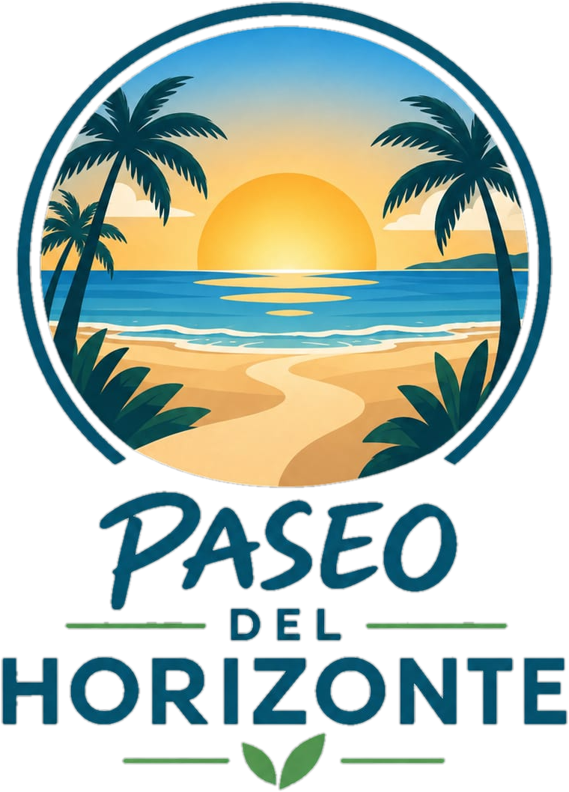
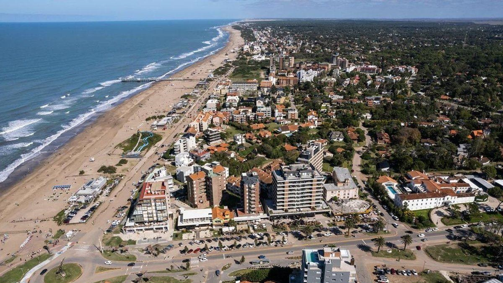

Playa Vista Eterna
Una de las principales playas de Paseo del Horizonte, ideal para disfrutar del mar, descansar y contemplar el paisaje costero.


Paseo del Horizonte es una ciudad turística costera reconocida por sus playas, paisajes y actividad turística. Durante el verano recibe visitantes que buscan disfrutar del mar, la gastronomía y las distintas propuestas culturales y recreativas. Te invitamos a descubrir todo lo que Paseo del Horizonte tiene para ofrecerte a vos y a tu familia o amigos. Mirá qué actividades y eventos hay.
Estos son algunos de los lugares que no te podés perder. Para conocer más, visitá Lugares de interés.
Una de las principales playas de Paseo del Horizonte, ideal para disfrutar del mar, descansar y contemplar el paisaje costero.
La ciudad ofrece distintas actividades para disfrutar del mar, como kayak, paseos en lancha y otras propuestas para los visitantes.
El corazón de la ciudad y uno de sus principales puntos de encuentro. Está rodeada de bares, restaurantes y espacios donde disfrutar de la vida nocturna.
Paseo del Horizonte ofrece diferentes actividades y eventos durante todo el año. En temporada de verano se destacan las propuestas al aire libre, los eventos culturales y las actividades recreativas para visitantes y residentes. Consultá la agenda completa de actividades.
Música en vivo en Plaza del Horizonte.
Feria artesanal durante la tarde.
Festival de música por la noche.
Actividades recreativas en la costa.